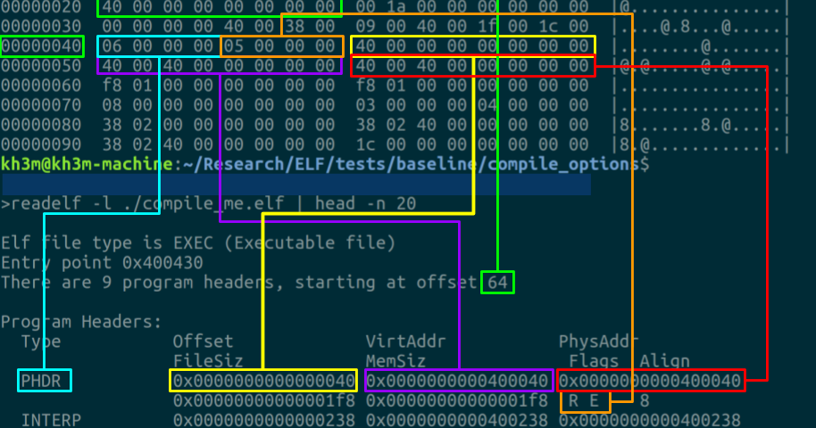
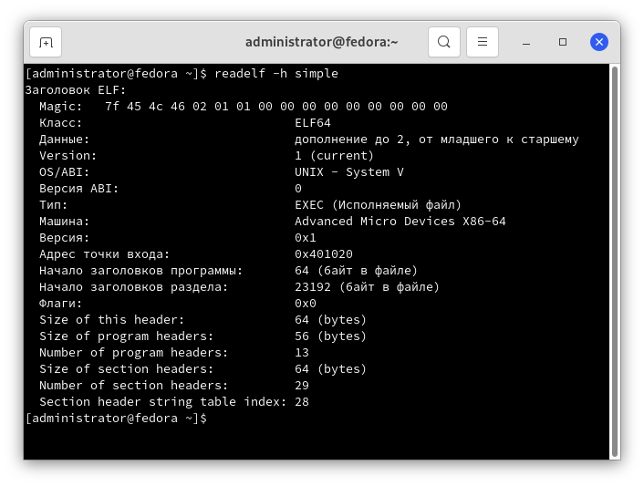
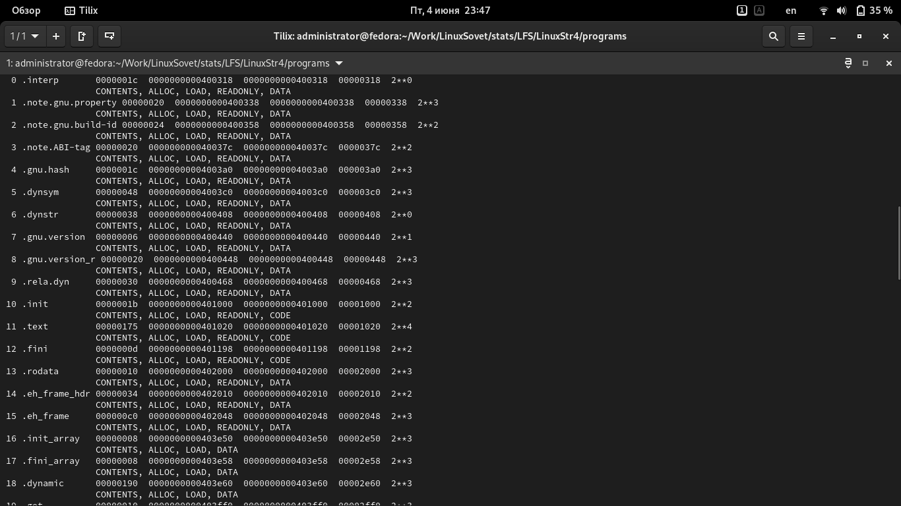

Строение ELF-файлов⚓︎

Теория⚓︎
ELF - сокращение от "Executable and Lincable Format" - формат исполняемых и связываемых файлов. ELF определяет их структуру. Данная спецификация позволяет UNIX-подобным(/образным) системам правильно интерпретировать содержащиеся в файле машинные команды. Используется во многих операционных системах: GNU/Linux, FreeBSD, Solaris, etc.
Понимание строения ELF файла может редко пригодиться, но, тем не менее, оно будет полезно для понимания процесса разработки программного обеспечения, поиска дыр в безопасности и обнаружения подозрительных программ или файлов.
Начальное строение⚓︎

Для начала создадим директорию, в которой будут расположены тестовые программы, на которых будем "упражняться":
mkdir ~/LinuxPrograms
cd ~/LinuxPrograms
Типы⚓︎
Есть несколько типов ELF файлов (см. таблицы в конце статьи): * Перемещаемый файл - хранит инструкции (и данные), которые могут быть связаны с другими объектными файлами. Результатом может быть объектный или исполняемый файл. Так же к этому типу относятся объектные файлы статических библиотек. * Разделяемый объектный файл - также как и первый тип, содержит инструкции и данные, может быть связан с другими перемещаемыми и разделяемыми объектными файлами, в результате чего будет создан новый объектный файл, либо же при запуске программы ОС может динамически связывать его с исполняемым файлом программы , в результате чего будет создан исполняемый образ программы (в посл. случае речь идёт о разделяемых библиотеках). * Исполняемый файл - содержит полное описание, позволяющее ОС создать образ процесса. В т.ч.: инструкции, данные, описания необходимых разделяемых объектных файлов и др.
Для того, чтобы вывод всех команд, приведённых ниже, был краток, прост и понятен, напишите какую-нибудь простейшую программу, в которой нет ничего лишнего, что затраднит чтение:
vim simple.c
int main() {
return(0);
}
И скомпилируйте её:
gcc -o simple simple.c
Убедитесь в том, что это ELF файл:
file simple
Структура у каждого файла может различаться. Грубо говоря, ELF файл состоит из: * Заголовка * Данных
Подробнее:
* Таблица заголовков программы: 0 или более сегментов памяти (только в исполняемом файле). Сообщает, как исполняемый файл должен быть помещён в виртуальную память процесса. Это необходимо для образа процесса, исполняемых файлов и общих объектов. Для перемещаемых объектных файлов это не требуется.
* Таблица заголовков разделов: 0 или более разделов. Сообщает, как и куда нужно загрузить раздел. Каждая запись раздела в таблице содержит название и размер раздела. Таблица заголовков раздела должна использоваться для файлов, используемых при редактировании ссылок.
* Данные: тпблицы заголовка программы или раздела
* Заголовок ELF (54/64 байта для 32/64 бит): определяет использование 32/64 бит (смотреть struct Elf32_Ehdr/struct Elf64_Ehdr в /usr/include/elf.h)
* Заголовок программы: как создать образ процесса. Используются во время выполнения. Сообщают ядру или компоновщику время выполнения ld.so, что загружать в память и как найти информацию о динамической компоновке.
* Заголовок разделов: используются во время компоновки или компиляции. Сообщают редактору ссылок ld, как разрашать символы и как группировать похожие потоки байтов из разных двоичных объектов ELF.
--* *--
- Разделы - самые мелкие неделимые единицы в ELF файле, которые могут быть обработаны. Разделы содержат основную часть информации об объектных файлах для представления связывания. Эти данные включают инструкции, таблицу символов и информацию о перемещении. (просмотр ссылок)
- Сегменты - наименьшие отдельные единицы, которые могут быть отображены в памяти с помощью
execили компоновщика. (исполняемые)
Разделы и сегменты не имеют определённого порядка в ELF. Только заголовок имеет фиксированную позицию.
При помощи утилиты readelf можно просмотреть основную информацию о файле.
Эта утилита входит в состав пакета
binutils, поэтому ничего доустанавливать не надо.
Основные возможности readelf:
-
Просмотр заголовка файла:
readelf -h simple -
Просмотр информации о сегментах и сейкиях:
readelf -S -W simple -
Чтение информации о символах:
readelf -s -W simple
Заголовок⚓︎
Введите:
readelf -h simple

Заголовок является обязательным - он служит для того, чтобы данные корректно интерпретировались при линковке и исполнении.
Из вывода утилиты readelf следует, что заголовок начинается с т.н. магического числа (magic number). Это число содержит информацию о файле. Первые 4 байта определяют, что это ELF: 45 4c 46.
После типа файла следует поле класса (архитектура, для которой предназначен бинарник).
Значения: * 0 - некорректный класс * 1 - 32 бит * 2 - 64 бит
Ниже находится поле данных. Это зависимый от процессора метод кодирования данных.
Значения: * 0 - некорректный тип * 1 - Little Endian (LSB) * 2 - Big Endian (MSB)
Разные типы процессоров по разному обрабатывают структуры данных, а эти значения помогают правильно интерпретировать объекты в файле.
Эффект LSB становится видимым при использовании утилиты hexdump на бинарном файле. Просмотрите заголовок ELF у нашего файла
simple:hexdump -n 16 simple
Получите такой вывод:
0000000 457f 464c 0102 0001 0000 0000 0000 0000
0000010
Пары значений другие из-за интерпретации порядка данных.
Затем следует поле "Версия". На данный момент, используется только версия 01.
Каждая ОС имеет свой способ вызова функций. Что-то похоже, а что-то различается. В поле OS/ABI описываются специфичные для операционной системы или ABI расширения, используемые в файле. В некоторых других структурах ELF файла имеются флаги и поля, значения которых зависят от ОС или ABI, интерпретация этих полей определяется значением данного байта. В таблице ниже представлена таблица значений:
| Значение | Описание |
|---|---|
| 0 | UNIX System V |
| 1 | HP-UX |
| 2 | NetBSD |
| 3 | GNU ELF (GNU/Linux) |
| 6 | Solaris |
| 7 | AIX |
| 8 | IRIX |
| 9 | FreeBSD |
| 10 | Tru64 UNIX |
| 11 | Modesto |
| 12 | OpenBSD |
| 13 | OpenVMS |
| 15 | Amiga Research OS |
| 18 | OpenVOS |
При необходимости, так же может быть указана версия ABI.
В поле "Машина" указывается архитектура аппаратной платформы, для которой предназначен файл. В таблице ниже представлены некоторые из них:
| Значение | Описание |
|---|---|
| 0 | Не определено |
| 3 | Intel 80386 |
| 20 | PowerPC |
| 21 | PowerPC (64 бит) |
| 62 | x86_64 |
В поле "Тип" указывается предназначение файла. В таблице ниже они приведены:
| Значение | Описание | Значение поля |
|---|---|---|
| 0 | Некорректный тип | --- |
| 1 | Перемещаемый файл (файл до линковки) | REL |
| 2 | Исполняемый файл | EXEC |
| 3 | Разделяемый объектный файл (библиотека) | DYN |
| 4 | Core file | CORE |
(смотрите блок "Типы" этой статьи, чтобы узнать больше информации).
Продолжение⚓︎
Помимо заголовка, есть данные. Оно, в свою очередь, подразделяется ещё на несколько: * программные заголовки (сегменты) * заголовки секций/секции * данные
О первых двух пунктах было уже говорено в пункте "Типы".
Для начала. Файл ELF имеет два различных «вида». Один из них предназначен для линкера и разрешает исполнение кода (сегменты). Другой предназначен для команд и данных (секции). В зависимости от цели, используется соответствующий тип заголовка. Начнём с заголовка программы, который находится в исполняемых файлах ELF.
Продолжение про заголовки программы⚓︎
ELF файл состоит из нуля и более сегментов. И описывает, как создать процесс, образ памяти для исполнения в рантайме. Когда ядро видит эти сегменты, оно размещает их в виртуальном адресном пространстве, используя системный вызов mmap...
Смотрите также:
man 2 mmap
... Т.е., конвертирует заранее подготовленные инструкции в образ памяти. Для разделяемых библиотек (shared libs) процесс схож.
И примеры заголовков:
GNU_EH_FRAME⚓︎
Сортированная очередь, используемая компилятором GCC. В неё хранятся обработчики исключений. Они используются для того, чтобы корректно обработать ситуацию, если что-то пошло не так.
GNU_STACK⚓︎
Используется для сохранения информации о стеке. Он не должен быть исполняемым, так как это может быть очень небезопасным.
Если сегмент GNU_STACK отсутствует, то используется исполняемый стек. Для того, чтобы показать детали устр-ва стека, используйте утилиты scanelf и execstack.
Смотрите также:
man scanelf
man execstack
Секции⚓︎
Секции появляются в файле после преобразования компилятором GNU C кода С в ассемблер (и ассемблер GNU создаёт объекты).

.text⚓︎
Содержит исполняемый код, упакованный в сегмент с правами на чтение и исполнение (но не редактирование).
.data⚓︎
Инициализированные данные с правами на чтение и запись.
.bss⚓︎
Неинициализированные данные с правами на чтение/запись
Ещё немного о секциях⚓︎
Также, некоторую информацию о секциях можно просмотреть, написав скрипт на Python с применением библиотеки lief:
#!/bin/python
import lief
binary = lief.parse("simple")
header = binary.header
print("Entry point: %08x" % header.entrypoint)
print("Architecture: ", header.machine_type)
for section in binary.sections:
print("Section %s - size: %s bytes" % (section.name, section.size))
Запуск:
chmod +x elf.py
./elf.py
Название
elf.pyзамените на нужное.
Вывод такой:

Смотрите также:⚓︎
man readelf
man objdump
man mmap
man hexdump
man file
man gcc